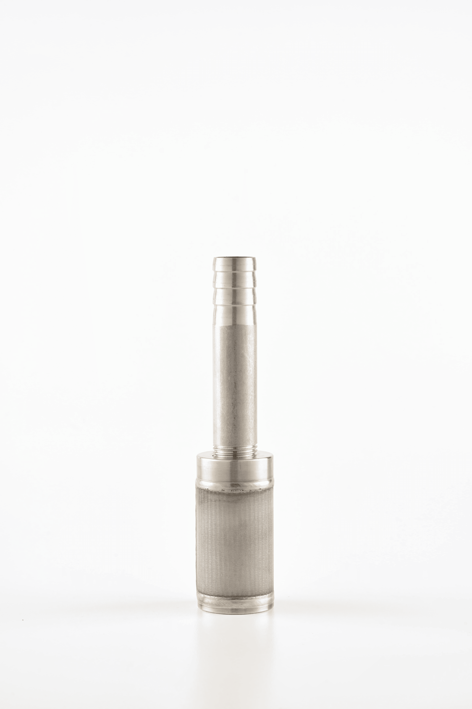
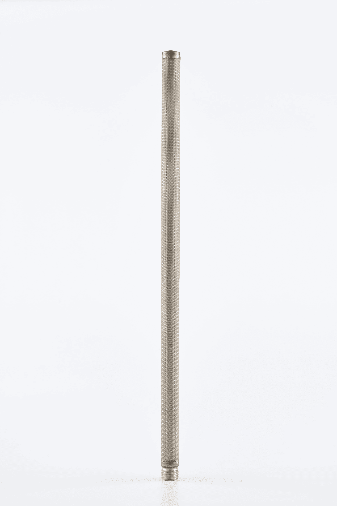
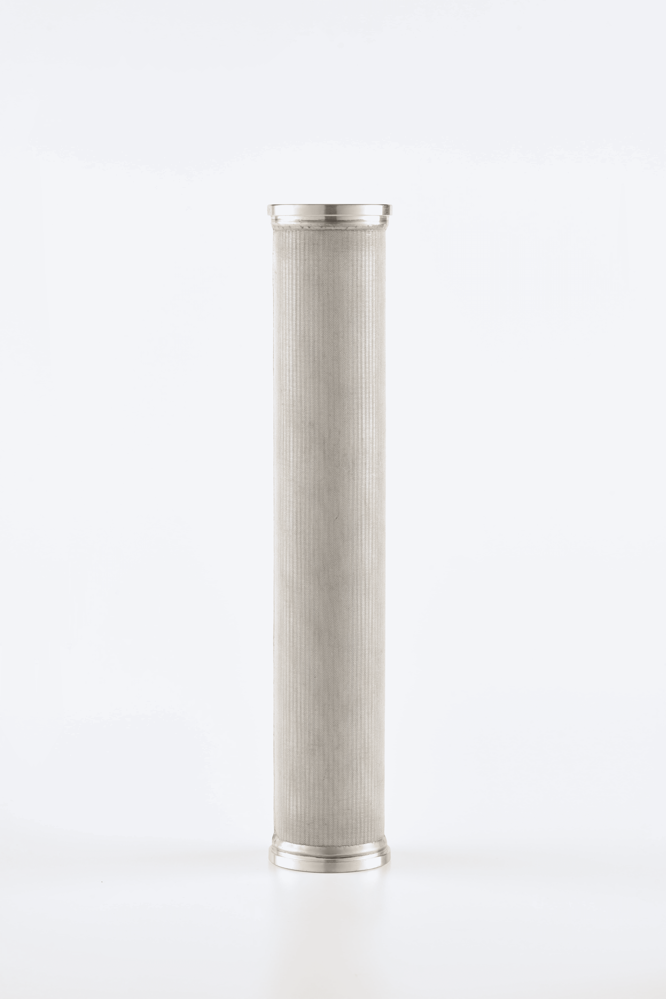
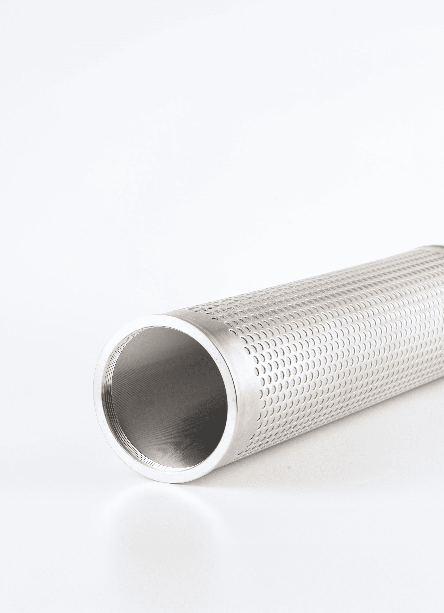

不鏽鋼平面蠟式濾芯
由二層以上的不銹鋼編織網重疊，經真空特殊加壓燒結製成生產出的多層燒結網具有良好的機械強度高度剛性、網孔不易變、穩定的過濾性能，具有抗腐蝕、耐磨、耐高溫等優點。





碟式濾芯(DISK)
標準品為7吋與12吋，有兩層編織網包覆主濾材，外圍燒結和平面加強結構組成，圓盤設計可增加最大過濾面積，用於聚合物熔體濾材。


粉末冶金濾芯
以金屬粉為原料，粉末經過篩選，燒結成型，具有過濾進度高，耐高溫等特性。

網包管濾芯
網材為編織網，包覆支撐多孔管，濾網在管外管內皆可，大多使用點銲或輪焊製作而成。抗腐蝕耐高溫之特性。


